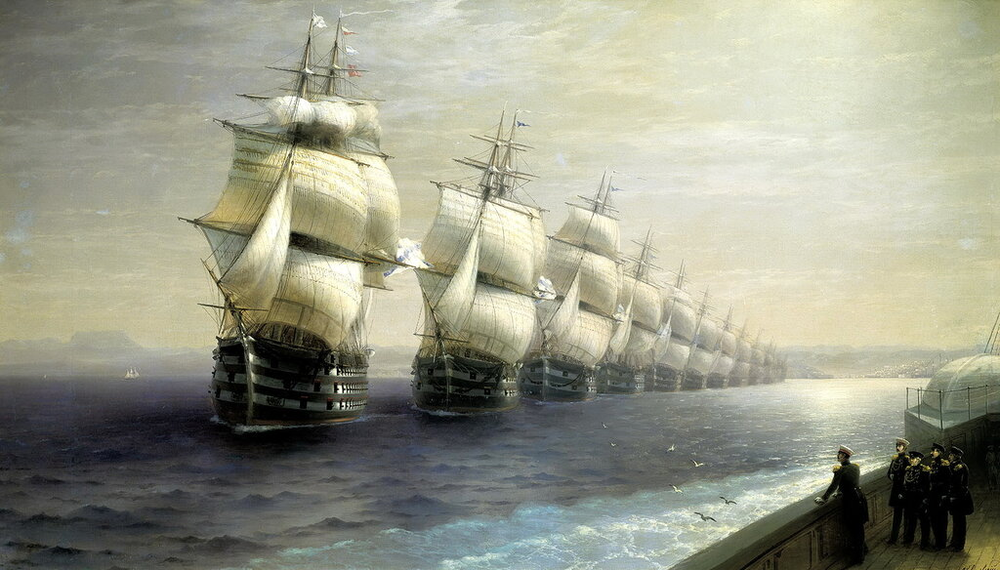

Маневрирование эскадр парусных кораблей
В клубе тоже устыдились и недоумевали, как это они все слона не приметили и упустили единственное возможное объяснение всем чудесам...
Достоевский. Бесы.
Мы почти всегда знаем, как это было. Но очень трудно понять, почему это было. Поэтому порой с таким трудом продвигается описание очевидных, казалось бы, событий истории.
Прежде чем продолжить наш путь на борту испанского галеона Сан Хуан вдоль берегов Англии, скажем несколько слов о тактике ведения боевых действий соединениями парусных кораблей в шестнадцатом-начале семнадцатого века. Тем более, что в отдельных комментариях к прошлому посту высказывались сомнения в существовании в ту эпоху каких-либо закрепленных документами принципов маневрирования флотами.
Плавание в составе корабельных отрядов или эскадр парусных кораблей, даже при отсутствии противодействия противника, требовало высокого мастерства и тщательной организационной подготовки. Посмотрим, с какими вызовами встречались капитаны кораблей и адмиралы корабельных эскадр в морском походе.
Удержание места в строю.

Айвазовский, Смотр Черноморского флота в 1849 году. (1886)
Сложное само по себе для парусника, это действие во сто крат усложнялось при маневрах соединения, и особенно при поворотах. Мы знаем, что поворот – это такой маневр парусного судна, при котором оно переходит с одного галса на другой (в отличие от судов с механическими двигателями, где поворотом является всякое изменение курса). Общеизвестно, и поэтому не требует подробных разъяснений, что существует два вида поворотов – оверштаг и через фордевинд. При повороте оверштаг парусное судно меняет галс, переходя линию ветра носом, т.е. штагом против ветра, а при повороте через фордевинд судно проходит линию ветра кормой. Для кораблей с прямым парусным вооружением (а именно к таким относились испанские и английские галеоны, составляющие боевое ядро и Непобедимой Армады, и флота Ее Величества королевы Англии) поворот через фордевинд может быть осуществлен одной вахтенной сменой, путем последовательной перебрасопки реев, тогда как поворот оверштаг является сложным маневром, для его осуществления вызывается по авралу вся команда. И, как уже говорилось, требуется большое мастерство для осуществления этих маневров в составе ордера корабельного соединения, чтобы не допустить серьезных столкновений судов. Если при индивидуальном маневрировании капитан судна мог выжимать все возможное из своей команды и своего корабля, то действующие инструкции для маневра в составе соединения накладывали специальные ограничения на этот случай. Рассмотрим один из примеров. При ходе в бейдевинд, т.е. при встречном ветре, английские моряки могли вести галеон, имея угол между его курсом и направлением встречного ветра около шести румбов ( или 11 ¼ ° х 6 = 67 ½ градусов; а хорошо тренированные моряки французских кораблей могли ходить даже еще круче к ветру). Однако требования английских документов для совместного плавания кораблей ограничивали этот показатель семью румбами (около 80°). Дополнительный румб требовался, чтобы нивелировать возможные ошибки навигации, типичные для парусников того времени, а именно
различную увальчивость кораблей в строю.
Увальчивость – свойство судна при движении в бейдевинд уклоняться под ветер при руле, поставленном прямо. Мы говорили об этом свойстве, когда рассматривали мореходность галер под парусами. Увальчивость судов увеличивалась с ростом скорости хода, отсюда мы должны сделать вывод, что это отрицательное качество сильнее проявляло себя на переходах к месту сражения, чем во время самого боя. Ведь скорость перемещения боевых порядков противостоявших друг другу флотов во время боя в те времена не превышала, как правило, четырех узлов.
Маневрирование с целью выиграть ветер
Основным тактическим приемом парусных флотов был маневр с целью выиграть ветер [ganó el biento (исп.), to gain the windward gage (англ.)]. Ни в сражениях галер, ни в последующих боях судов с механическими двигателями ветер не имел такого значения, как в парусную эпоху. Ведь парус позволял, как мы видели, совершать движение едва лишь по половине возможных направлений из 32 румбов полной картушки компаса. Соединение кораблей, находящееся в наветренном по отношению к противнику положении (т.е. находится ближе к ветру по отношению к эскадре противника), получало преимущество и в скорости, и в маневренности. Кроме того, дым от орудий своих кораблей и кораблей противника не снижал видимости, а это было важным элементом, так как бóльшая часть команд флагмана во время боя доводилась до кораблей эскадры сигнальными флагами. Ну и не последним преимуществом была возможность использования зажигательных судов – брандеров – против кораблей противника.
Конечно, свои достоинства имело и положение атакующего флота под ветром у противника (в стороне, противоположной той, откуда дует ветер). Поврежденный корабль врага, лишившись хода, дрейфовал в сторону находящейся под ветром эскадры и мог быть легко захвачен, свои же поврежденные корабли просто сносились ветром в тыл. И еще одно преимущество имел флот, атакующий противника из-под ветра: у вражеских кораблей не было другого выхода, как принимать бой на предложенных условиях. Отход против ветра был безнадежным предприятием.
В конце XVI–начале XVII в. морские сражения в составе правильно построенных эскадр все же были редкостью. Корабли шли к месту сражения в определенных порядках, но как только начинался бой – каждый отвечал за себя, бой один на один был основной формой таких сражений. Это, тем более, было характерно и для английского флота, где очень сильны были привычки приватиров. Но это не значит, что в те времена уже не появлялись ростки оперативно-тактического искусства при ведении морского боя. Английский адмирал Уильям Монсон (мы ранее писали о нем) одним из первых приступил к теоретическому обоснованию основных тактических приемов борьбы на море в составе соединений кораблей. Монсон принимал участие в боях против Непобедимой Армады в 1588 году, будучи лейтенантом на борту небольшого (ок. 70 тонн) корабля ее величества "Charles", входившего в состав эскадры Фрэнсиса Дрейка. Он на практике сумел оценить тактические приемы испанцев на море, которые были зафиксированы в работе известного испанского навигатора Алонсо де Чавеса. Де Чавес не был адмиралом, как считатают некоторые наши авторы, он был талантливым картографом, космографом и знатоком навигации; в 1552 году при Карле V он был назначен Филппом II, тогда еще наследным принцем, на пост Piloto Mayor (Главный штурман) в Каса-де-Контратасьон (La Casa de Contratación, букв. «Торговый дом», а по сути – «Адмиралтейство Индий») в Севилье и занимал эту должность до самой своей смерти в возрасте далеко за девяносто лет. Ни один штурман в испанском флоте не мог получить лицензию, минуя экзамен у де Чавеса. Практически все испанские официальные (секретные!) карты мира – Падрон Реаль – состалялись с его личным участием. Талант де Чавеса проявился и в написанном им в 1537 году трактате Espejo de Navegantes («Зеркало моряков»; некоторые переводчики Espejo вместо «зеркало» переводят как «подзорная труба»). Испанский навигатор считается одним из первых авторов сочинений по тактике боевых действий на море. И так как его первыми читателями были в основном сухопутные офицеры, «волей пославшего их короля» оказавшиеся на военных кораблях, то де Чавес пытается объяснить законы морского боя доступным им языком, по аналогии с принципами войны на суше.
Подробнее с наставлением Алонсо де Чавеса познакомимся в следующий раз.